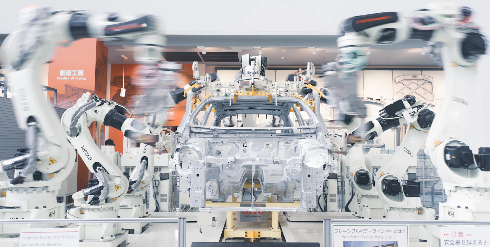

Manufacturing engineering
Process improvement, production workflows, and practical changes that help teams work consistently on the shop floor.
Industry 4.0
My focus is on improving manufacturing processes and bringing automation and production data into everyday operations.
Open to international opportunities

Process improvement, production workflows, and practical changes that help teams work consistently on the shop floor.
Production data, connected equipment, and automation opportunities that address real operating needs.
Technical project planning, coordination across teams, and implementation on the production floor.
I’m interested in how manufacturing teams can use shop-floor data to understand process performance, decide where automation makes sense, and plan changes around day-to-day production.
I’m looking for international roles in manufacturing engineering, industrial digitalization, and engineering project delivery.
Recruiting for a manufacturing, project engineering, or Industry 4.0 role?